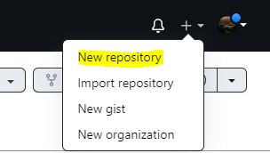
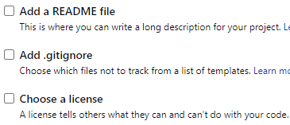

Welcome To Git Hub Tutorial
CREATING REPOSITORY
- create a GITHUB account by signing up

- In the upper-right corner of any page, use the drop-down menu, and select New repository.

- In the Repository name box, enter Repository Name
- In the Description box add any short description
- Check to add Readme file which contains a detailed description about your project

SETUP
Configuring user information used across all local repositories
- git config --global user.name “[firstname lastname]”
Set a name that is identifiable for credit when review version history
- git config --global user.email “[valid-email]”
Set an email address that will be associated with each history marker
- git config --global color.ui auto
Set automatic command line coloring for Git for easy.
INITIALIZING
Initialize GIT by using these commands
- git init
initialize an existing directory as a Git repository
- git clone [url]
retrieve an entire repository from a hosted location via URL
STAGE AND SNAPSHOT
Working with snapshots and the Git staging area
- git status
show modified files in working directory, staged for your next commit
- git add [file]
add a file as it looks now to your next commit (stage)
- git commit -m “[descriptive message]”
commit your staged content as a new commit snapshot
REMOTE ACCESS
Working with GITHUB from Remote Desktop
- git add origin [url]
connect your repository with your local git project
- git push
Push all files to remote server
- git pull
Used to fetch data from remote server if updated by any other user
- git clone
Clone anyone's repository into your local project